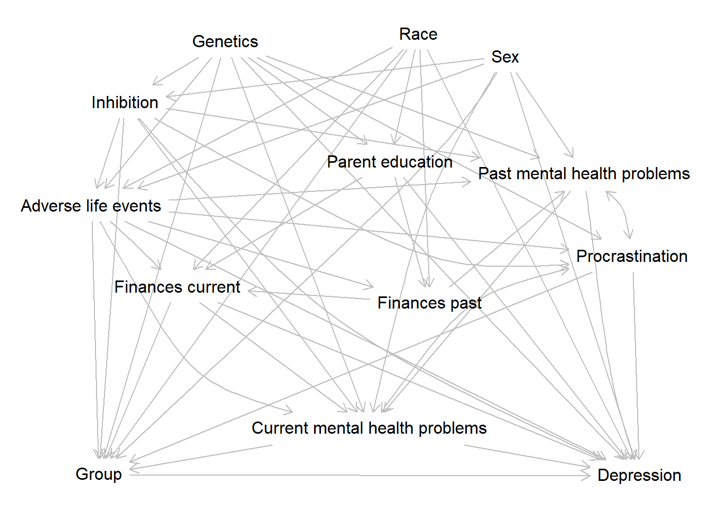

Depression Trajectories
Steve Brunwasser
2022-07-29
1 Derived variables
- race.smb: Derived race variable with 3 categories
- deo.smb: Derive
Prepare the workspace.
load( 'G:/My Drive/PrevSciLab/Students/PhdStudents/NicoleK/TransitionStudy/ctsr.RData' )
ctsr1 <- subset( ctsr, !is.na( ctsr$transfer ),
c( 'id','week','campus','group','male','race2','parented','pastfin',
'curfin','relig','medsever','medscur','txcur','therever','thercur',
'txever','phq','procrast','bis','bas' )
)
require( Hmisc )
require( lme4 )
require( dagitty )2 Create a DAG to identify causal assumptions
dag <- dagitty('dag {
"Adverse life events" [pos="-2.013,-1.192"]
"Current mental health problems" [pos="-0.306,0.955"]
"Finances current" [pos="-0.803,0.378"]
"Finances past" [pos="-1.280,-0.420"]
"Parent education" [pos="-0.369,-0.264"]
"Past mental health problems" [pos="0.862,-0.971"]
Depression [outcome,pos="1.182,1.293"]
Genetics [pos="-1.442,-1.549"]
Group [exposure,pos="-1.798,1.286"]
Procrastination [pos="1.171,-0.050"]
Race [pos="-0.290,-1.646"]
Sex [pos="0.338,-1.360"]
"Adverse life events" -> "Current mental health problems" [pos="-1.301,0.676"]
"Adverse life events" -> "Finances current" [pos="-1.631,-0.413"]
"Adverse life events" -> "Finances past"
"Adverse life events" -> "Past mental health problems"
"Adverse life events" -> Depression
"Adverse life events" -> Group
"Adverse life events" -> Procrastination
"Current mental health problems" -> Depression
"Current mental health problems" -> Group
"Current mental health problems" <-> Procrastination
"Finances current" -> "Current mental health problems"
"Finances current" -> Depression
"Finances current" -> Group
"Finances past" -> "Finances current"
"Finances past" -> "Past mental health problems"
"Parent education" -> "Finances current"
"Parent education" -> "Finances past"
"Parent education" -> Depression
"Past mental health problems" -> "Current mental health problems"
"Past mental health problems" -> Depression [pos="1.014,0.657"]
"Past mental health problems" <-> Procrastination
Genetics -> "Adverse life events"
Genetics -> "Current mental health problems"
Genetics -> "Parent education"
Genetics -> "Past mental health problems"
Genetics -> Depression [pos="-0.253,-0.647"]
Genetics -> Group
Genetics -> Procrastination
Group -> Depression
Procrastination -> Depression
Procrastination -> Group
Race -> "Adverse life events"
Race -> "Finances current"
Race -> "Finances past"
Race -> "Parent education"
Race -> Depression
Race -> Group
Sex -> "Adverse life events"
Sex -> "Current mental health problems"
Sex -> "Past mental health problems"
Sex -> Depression
Sex -> Group
}
')
plot( dag )
impliedConditionalIndependencies( dag )## Adle _||_ Prne | Gntc, Race
## Cmhp _||_ Fnnp | Adle, Fnnc, Gntc, Pmhp, Sex
## Cmhp _||_ Prne | Adle, Fnnc, Fnnp, Gntc, Race
## Cmhp _||_ Prne | Adle, Fnnc, Fnnp, Gntc, Sex
## Cmhp _||_ Prne | Adle, Fnnc, Gntc, Pmhp, Sex
## Cmhp _||_ Race | Adle, Fnnc, Fnnp, Gntc, Sex
## Cmhp _||_ Race | Adle, Fnnc, Gntc, Pmhp, Sex
## Fnnc _||_ Pmhp | Adle, Fnnp, Gntc, Sex
## Fnnc _||_ Pmhp | Adle, Fnnp, Gntc, Race
## Fnnc _||_ Pmhp | Adle, Fnnp, Prne, Race
## Fnnc _||_ Gntc | Adle, Prne, Race
## Fnnc _||_ Prcr | Adle, Gntc
## Fnnc _||_ Prcr | Adle, Prne, Race
## Fnnc _||_ Sex | Adle, Gntc, Race
## Fnnc _||_ Sex | Adle, Prne, Race
## Fnnp _||_ Dprs | Adle, Cmhp, Fnnc, Gntc, Prne, Pmhp, Prcr, Race, Sex
## Fnnp _||_ Gntc | Adle, Prne, Race
## Fnnp _||_ Grop | Adle, Cmhp, Fnnc, Gntc, Prcr, Race, Sex
## Fnnp _||_ Prcr | Adle, Gntc
## Fnnp _||_ Prcr | Adle, Prne, Race
## Fnnp _||_ Sex | Adle, Gntc, Race
## Fnnp _||_ Sex | Adle, Prne, Race
## Prne _||_ Pmhp | Adle, Fnnp, Gntc, Sex
## Prne _||_ Pmhp | Adle, Fnnp, Gntc, Race
## Prne _||_ Grop | Adle, Cmhp, Fnnc, Gntc, Prcr, Race, Sex
## Prne _||_ Grop | Adle, Fnnc, Fnnp, Gntc, Race
## Prne _||_ Prcr | Adle, Gntc
## Prne _||_ Prcr | Gntc, Race
## Prne _||_ Sex
## Pmhp _||_ Grop | Adle, Cmhp, Fnnc, Gntc, Prcr, Race, Sex
## Pmhp _||_ Grop | Adle, Cmhp, Fnnc, Fnnp, Gntc, Prcr, Sex
## Pmhp _||_ Race | Adle, Fnnp, Gntc, Sex
## Gntc _||_ Race
## Gntc _||_ Sex
## Prcr _||_ Race | Adle, Gntc
## Prcr _||_ Sex | Adle, Gntc
## Race _||_ Sexhtml( describe( ctsr1 ) )ctsr1
20 Variables 1755 Observations
20 Variables 1755 Observations
id
| n | missing | distinct |
|---|---|---|
| 1755 | 0 | 351 |
week

| n | missing | distinct | Info | Mean | Gmd |
|---|---|---|---|---|---|
| 1755 | 0 | 5 | 0.96 | 6.4 | 6.884 |
Value -2 2 6 11 15 Frequency 351 351 351 351 351 Proportion 0.2 0.2 0.2 0.2 0.2
campus
| n | missing | distinct |
|---|---|---|
| 1715 | 40 | 2 |
Value Campus Off Campus Frequency 1300 415 Proportion 0.758 0.242
group

| n | missing | distinct |
|---|---|---|
| 1635 | 120 | 3 |
Value Freshmen-On Transfer-Off Transfer-On Frequency 1090 335 210 Proportion 0.667 0.205 0.128
male
| n | missing | distinct | Info | Sum | Mean | Gmd |
|---|---|---|---|---|---|---|
| 1755 | 0 | 2 | 0.721 | 705 | 0.4017 | 0.481 |
race2

| n | missing | distinct |
|---|---|---|
| 1730 | 25 | 3 |
Value White Asian Other Frequency 1155 400 175 Proportion 0.668 0.231 0.101
parented

| n | missing | distinct |
|---|---|---|
| 1730 | 25 | 5 |
| lowest : | Some HS or less | HS degree | Some college | College degree | Post-college degree |
| highest: | Some HS or less | HS degree | Some college | College degree | Post-college degree |
Value Some HS or less HS degree Some college
Frequency 30 130 160
Proportion 0.017 0.075 0.092
Value College degree Post-college degree
Frequency 560 850
Proportion 0.324 0.491
pastfin

| n | missing | distinct |
|---|---|---|
| 1755 | 0 | 4 |
Value Very poor Enough but not many extras
Frequency 25 400
Proportion 0.014 0.228
Value Comfortable Well to do
Frequency 1040 290
Proportion 0.593 0.165
curfin

| n | missing | distinct |
|---|---|---|
| 1750 | 5 | 3 |
Value Struggle Tight but fine Not a problem Frequency 255 985 510 Proportion 0.146 0.563 0.291
relig

| n | missing | distinct |
|---|---|---|
| 1705 | 50 | 4 |
Value Not religious at all Not too religious Fairly religious
Frequency 455 540 545
Proportion 0.267 0.317 0.320
Value Very religious
Frequency 165
Proportion 0.097
medsever
| n | missing | distinct |
|---|---|---|
| 1755 | 0 | 2 |
Value No Yes Frequency 1545 210 Proportion 0.88 0.12
medscur
| n | missing | distinct |
|---|---|---|
| 1755 | 0 | 2 |
Value No Yes Frequency 1655 100 Proportion 0.943 0.057
txcur
| n | missing | distinct |
|---|---|---|
| 1755 | 0 | 2 |
Value No Yes Frequency 1640 115 Proportion 0.934 0.066
therever
| n | missing | distinct |
|---|---|---|
| 1755 | 0 | 2 |
Value Yes No Frequency 450 1305 Proportion 0.256 0.744
thercur
| n | missing | distinct |
|---|---|---|
| 1755 | 0 | 2 |
Value No Yes Frequency 1715 40 Proportion 0.977 0.023
txever
| n | missing | distinct | Info | Sum | Mean | Gmd |
|---|---|---|---|---|---|---|
| 1755 | 0 | 2 | 0.615 | 505 | 0.2877 | 0.4101 |
phq

| n | missing | distinct | Info | Mean | Gmd | .05 | .10 | .25 | .50 | .75 | .90 | .95 |
|---|---|---|---|---|---|---|---|---|---|---|---|---|
| 1646 | 109 | 25 | 0.989 | 4.499 | 4.516 | 0 | 0 | 1 | 3 | 7 | 10 | 13 |
procrast

| n | missing | distinct | Info | Mean | Gmd | .05 | .10 | .25 | .50 | .75 | .90 | .95 |
|---|---|---|---|---|---|---|---|---|---|---|---|---|
| 987 | 768 | 13 | 0.991 | 9.101 | 3.894 | 3 | 4 | 6 | 9 | 12 | 14 | 15 |
Value 3 4 5 6 7 8 9 10 11 12 13 14
Frequency 78 39 45 95 71 80 115 77 100 146 37 37
Proportion 0.079 0.040 0.046 0.096 0.072 0.081 0.117 0.078 0.101 0.148 0.037 0.037
Value 15
Frequency 67
Proportion 0.068
bis

| n | missing | distinct | Info | Mean | Gmd | .05 | .10 | .25 | .50 | .75 | .90 | .95 |
|---|---|---|---|---|---|---|---|---|---|---|---|---|
| 1750 | 5 | 21 | 0.992 | 21.15 | 4.1 | 14 | 17 | 19 | 22 | 24 | 26 | 27 |
bas

| n | missing | distinct | Info | Mean | Gmd | .05 | .10 | .25 | .50 | .75 | .90 | .95 |
|---|---|---|---|---|---|---|---|---|---|---|---|---|
| 1745 | 10 | 28 | 0.996 | 41.28 | 5.838 | 32 | 35 | 38 | 42 | 45 | 48 | 50 |
label( ctsr1$id ) <- 'Unique participant identifier'
label( ctsr1$week ) <- 'Week of the semester (0=semester begins)'
label( ctsr1$campus ) <- 'Does participant live on campus?'
require( rms )
dd <- datadist( ctsr1 )
options( datadist = 'dd' )Adverse life events, Current mental health problems, Finances current, Genetics, Procrastination, Race, Sex
Redundacy analysis
redun( phq ~ group + txcur + curfin + procrast + race2 + male, data = ctsr1 )##
## Redundancy Analysis
##
## redun(formula = phq ~ group + txcur + curfin + procrast + race2 +
## male, data = ctsr1)
##
## n: 901 p: 7 nk: 3
##
## Number of NAs: 854
## Frequencies of Missing Values Due to Each Variable
## phq group txcur curfin procrast race2 male
## 109 120 0 5 768 25 0
##
##
## Transformation of target variables forced to be linear
##
## R-squared cutoff: 0.9 Type: ordinary
##
## R^2 with which each variable can be predicted from all other variables:
##
## phq group txcur curfin procrast race2 male
## 0.118 0.093 0.021 0.069 0.096 0.087 0.061
##
## No redundant variables# m1 <- glmer.nb( phq ~ group*rcs( week, 3) + txcur*rcs( week, 3) + curfin + rcs( procrast, 3) + race2 + male +
# ( 1 | id ),
# data = ctsr1,
# verbose = T
# )
#
# save( m1, file = 'm1.Rdata' )
load( 'm1.Rdata' )# m2 <- glmer( phq ~ group*rcs( week, 3) + txcur*rcs( week, 3) + curfin + rcs( procrast, 3) + race2 + male +
# ( 1 | id ),
# family = 'poisson',
# data = ctsr1
# )
#
# save( m2, file = 'm2.Rdata' )
load( 'm2.Rdata' )Likelihood ratio test: Do we need the
( lrt1.m1.m2 <- anova( m1, m2 ) )## Data: ctsr1
## Models:
## m2: phq ~ group * rcs(week, 3) + txcur * rcs(week, 3) + curfin + rcs(procrast, 3) + race2 + male + (1 | id)
## m1: phq ~ group * rcs(week, 3) + txcur * rcs(week, 3) + curfin + rcs(procrast, 3) + race2 + male + (1 | id)
## npar AIC BIC logLik deviance Chisq Df Pr(>Chisq)
## m2 20 4537.1 4633.2 -2248.6 4497.1
## m1 21 4437.9 4538.8 -2198.0 4395.9 101.15 1 < 2.2e-16 ***
## ---
## Signif. codes: 0 '***' 0.001 '**' 0.01 '*' 0.05 '.' 0.1 ' ' 1save( lrt1.m1.m2, file = 'lrt1.m1.m2.RData' )
load( 'lrt1.m1.m2.RData' )